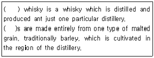
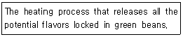
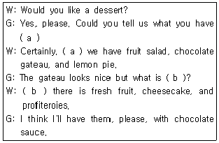
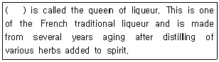
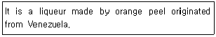
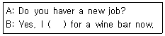
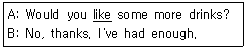
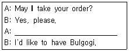

조주기능사 (2013-07-21 기출문제)
1과목: 주류학개론
1. 다음 중 양조주에 대한 설명이 옳지 않은 것은?
- 맥주, 와인 등이 이에 속한다.
- 증류주와 혼성주의 제조원료가 되기도 한다.
- 보존기간이 비교적 짧고 유통기간이 있는 것이 많다.
- 발효주라고도 하며 알코올발효는 효모에 의해서만 이루어진다.
(정답률: 65%)

2. 양조주의 설명으로 맞지 않는 것은?
- 주로 과일이나 곡물을 발효하여 만든 술이다.
- 단발효주, 복발효주 2가지 방법이 있다.
- 양조주의 알코올 함유량은 대략 25%이상이다.
- 발효하는 과정에서 당분이 효모에 의해 물, 에틸알코올, 이산화탄소가 발생한다.
(정답률: 83%)
3. 다음 중 증류주가 아닌 것은?
- 보드카(vodka)
- 샴페인(champagne)
- 진(gin)
- 럼(rum)
(정답률: 88%)
4. 단식 증류법(pot still)의 장점이 아닌 것은?
- 대량생산이 가능하다.
- 원료의 맛을 잘 살리 수 있다.
- 좋은 향을 잘 살릴 수 있다.
- 시설비가 적게 든다.
(정답률: 75%)
5. 음료에 관한 설명으로 틀린 것은?
- 음료는 크게 알콜성 음료와 비알콜성 음료로 구분된다.
- 알콜성 음료는 양조주, 증류주, 혼성주로 분류된다.
- 커피는 영양음료로 분류된다.
- 발효주에는 탁주, 와인, 청주, 맥주 등이 있다.
(정답률: 90%)
6. 탄산음료에서 탄산가스의 역할이 아닌 것은?
- 당분 분해
- 미생물의 발효 저지
- 향기의 변화 보호
- 청량감 부여
(정답률: 75%)
7. 다음 중 과실음료가 아닌 것은?
- 토마토 주스
- 천연과즙주스
- 희석과즙음료
- 과립과즙음료
(정답률: 82%)
8. 호남의 명주로서 부드럽게 취하고 뒤끝이 깨끗하여 우리의 고유한 전통술로 정평이 나있고, 쌀로 빚은 30도의 소주에 배, 생강, 울금 등 한약재를 넣어 숙성시킨 약주에 해당하는 민속주는?
- 이강주
- 춘향주
- 국화주
- 복분자주
(정답률: 83%)
9. 다음 민속주 중 약주가 아닌 것은?
- 한산 소곡주
- 경주 교동 법주
- 아산 연엽주
- 진도 홍주
(정답률: 61%)
10. 다음 중 의미가 다른 것은?
- 섹(Sec)
- 두(Doux)
- 둘체(Dulce)
- 스위트(Sweet)
(정답률: 60%)
11. 독일의 스파클링 와인(Sparkling wine)은?
- 젝트
- 로트바인
- 로제바인
- 바이스바인
(정답률: 67%)
12. 독일의 QmP 와인등급 6단계에 속하지 않는 것은?
- 라트바인
- 카비네트
- 슈페트레제
- 아우스레제
(정답률: 40%)
13. 다음 중 이탈리아 와인 등급 표시로 맞는 것은?
- A.O.C
- D.O
- D.O.C.G
- QbA
(정답률: 69%)
14. Sherry wine의 원산지는?
- Bordeaux 지방
- Xeres 지방
- Rhine 지방
- Hockheim 지방
(정답률: 52%)
15. 다음 중 White wine 품종은?
- Sangiovese
- Nebbiolo
- Barbera
- Muscadelle
(정답률: 52%)
16. 빈티지(Vintage)란 무엇을 뜻하는가?
- 포도주의 이름
- 포도주의 수확년도
- 포도주의 원산지명
- 포도의 품종
(정답률: 90%)
17. 브랜디의 설명으로 틀린 것은?
- 브랜딩하여 제조한다.
- 향미가 좋아 식전주로 주로 마신다.
- 유명산지는 꼬냑과 아르마냑이다.
- 과실을 주원료로 사용하는 모든 증류주에 이 명칭을 사용한다.
(정답률: 57%)
18. 가장 오랫동안 숙성한 브랜디(Brandy)는?
- V.O.
- V.S.O.P
- X.O.
- EXTRA
(정답률: 75%)
19. 프리미엄 테킬라의 원료는?
- 아가베 아메리카나
- 아가베 아즐 데킬라나
- 아가베 시럽
- 아가베 아트로비렌스
(정답률: 79%)
20. 다음 중 버번위스키(bourbon whiskey)는?
- Ballantine's
- I. W. Harper's
- Lord Calvert
- Old Bushmills
(정답률: 45%)
21. 슬로우 진(sloe gin)의 설명 중 옳은 것은?
- 증류주의 일종이며, 진(gin)의 종류이다.
- 보드카(vodka)에 그레나딘 시럽을 첨가한 것이다.
- 아주 천천히 분위기 있게 먹는 칵테일이다.
- 오얏나무 열매 성분을 진(gin)에 첨가한 것이다.
(정답률: 79%)
22. 저먼 진(German gin)이라고 일컬어지는 Spirits 는?
- 아쿠아비트(Aquavit)
- 스타인헤거(Steinhager)
- 키르슈(Kirsch)
- 후람보아즈(Framboise)
(정답률: 54%)
23. 에소프레소의 커피추출이 빨리 되는 원인이 아닌 것은?
- 약한 탬핑 강도
- 너무 많은 커피 사용
- 높은 펌프 압력
- 너무 굵은 분쇄입자
(정답률: 72%)
24. 콘 위스키(corn whiskey)란?
- 50%이상 옥수수가 포함된 것
- 옥수수 50%, 호밀 50% 섞인 것
- 80% 이상 옥수수가 포함된 것
- 40% 이상 옥수수가 포함된 것
(정답률: 80%)
25. Straight Whisky에 대한 설명으로 틀린 것은?
- 스코틀랜드에서 생산되는 위스키이다.
- 버번위스키, 콘 위스키 등이 이에 속한다.
- 원료곡물 중 한 가지를 51% 이상 사용해야 한다.
- 오크통에서 2년 이상 숙성시켜야 한다.
(정답률: 52%)
26. aquavit에 대한 설명으로 틀린 것은?
- 감자를 맥아로 당화시켜 발효하여 만든다.
- 알코올 농도는 40~45%이다.
- 엷은 노란색을 띄는 것을 taffel이라고 한다.
- 북유럽에서 만드는 증류주이다.
(정답률: 58%)
27. 생강을 주원료로 만든 것은?
- 진저엘
- 토닉워터
- 소다수
- 칼린스 믹서
(정답률: 94%)
28. 다음 중 리큐르(Liqueur)는 어느 것인가?
- 버건디(Burgundy)
- 드라이 쉐리(Dry sherry)
- 꼬앵뜨로(Cointreau)
- 베르무트(Vermouth)
(정답률: 70%)
29. 다음 중 하면발효맥주에 해당 되는 것은?
- Stout Beer
- Porter Beer
- Pilsner Beer
- Ale Beer
(정답률: 68%)
30. 다음 중 알코올성 커피는?
- 카페 로얄(Cafe Royale)
- 비엔나 커피(Vienna Coffee)
- 데미타세 커피(Demi-Tasse Coffee)
- 카페오레(Cafe au Lait)
(정답률: 78%)
2과목: 주장관리개론
31. 주장(bar) 경영에서 의미하는 "happy hour"를 올바르게 설명한 것은?
- 가격할인 판매시간
- 연말연시 축하 이벤트 시간
- 주말의 특별행사 시간
- 단골고객 사은 행사
(정답률: 83%)
32. 다음 중 주장 관리의 의의에 해당되지 않는 것은?
- 원가관리
- 매상관리
- 재고관리
- 예약관리
(정답률: 69%)
33. 주장(bar)의 핵심점검표 사항 중 영업에 관련한 법규상의 문제와 관계가 가장 먼 것은?
- 소방 및 방화사항
- 예산집행에 관한 사항
- 면허 및 허가사항
- 위생 점검 필요사항
(정답률: 75%)
34. 주장의 시설에 대한 설명으로 잘못된 것은?
- 주장은 크게 프런트 바(front bar), 백 바(back bar), 언더 바(under bar)로 구분된다.
- 프런트 바(front bar)는 바텐더와 고객이 마주보고 서브하고 서빙을 받는 바를 말한다.
- 백 바(back bar)는 칵테일용으로 쓰이는 술의 저장 및 전시를 위한 공간이다.
- 언더 바(under bar)는 바텐더 허리 아래의 공간으로 휴지통이나 빈병 등을 둔다.
(정답률: 75%)
35. 구매관리와 관련된 원칙에 대한 설명으로 옳은 것은?
- 나중에 반입된 저장품부터 소비한다.
- 한꺼번에 많이 구매한다.
- 공급업자와의 유대관계를 고려하여 검수 과정은 생략한다.
- 저장창고의 크기, 호텔의 재무상태, 음료의 회전을 고려하여 구매한다.
(정답률: 87%)
36. 영업을 폐점하고 남은 물량을 품목별로 재고조사하는 것을 무엇이라 하는가?
- daily issue
- inventory management
- par stock
- FIFO
(정답률: 69%)
37. 호텔에서 호텔홍보, 판매촉진 등 특별한 접대목적으로 일부를 무료로 제공하는 것은?
- Complaint
- Complimentary Service
- F/O Cashier
- Out of Order
(정답률: 84%)
38. 다음 중 주장 종사원(waiter / waitress)의 주요 임무는?
- 고객이 사용한 김ㄹ과 빈 잔을 세척한다.
- 칵테일의 부재료를 준비한다.
- 창고에서 주장(bar)에서 필요한 물품을 보급한다.
- 고객에게 주문을 받고 주문받은 음료를 제공한다.
(정답률: 85%)
39. Bar 종사원의 올바른 태도가 아닌 것은?
- 영업장내에서 동료들과 좋은 인간관계를 유지하다.
- 항상 예의 바르고 분명한 언어와 태도로 고객을 대한다.
- 고객과 정치성이 강한 대화를 주로 나눈다.
- 손님에게 지나친 주문을 요구하지 않는다.
(정답률: 92%)
40. 바텐더(bartender)의 직무에 관한 설명으로 가장 거리가 먼 것은?
- 바 카운터 내의 청결, 정리정돈 등을 수시로 해야 한다.
- 파 스탁(par stock)에 준한 보급수령을 해야 한다.
- 각종 기계 및 기구의 작동상태를 점검해야 한다.
- 조주는 바텐더 자신의 기준이나 아이디어에 따라 제조해야 한다.
(정답률: 89%)
41. 바텐더의 영업 개시 전 준비사항이 아닌 것은?
- 모든 부재료를 점검한다.
- White wine을 상온에 보관하고 판매한다.
- Juice 종류는 다양한지 확인한다.
- 칵테일 네프킨과 코스터를 준비한다.
(정답률: 88%)
42. 다음 중 세이커(shaker)를 사용하여야 하는 칵테일은?
- 브랜디 알렉산더(Brandy Alexander)
- 드라이 마티니(Dry Martini)
- 올드 패션드(Old fashioned)
- 크렘드 망뜨 프라페(Creme de menthe frappe)
(정답률: 61%)
43. 칵테일을 컵에 따를 때 얼음이 들어가지 않도록 걸러주는 기구는?
- Shaker
- strainer
- stick
- blender
(정답률: 89%)
44. Hot drinks cocktail 이 아닌 것은?
- God Father
- Irish Coffee
- Jamaica Coffee
- Tom and Jerry
(정답률: 50%)
45. 위스키가 기주로 쓰이지 않는 칵테일은?
- 뉴욕(New York)
- 로브 로이(Rob Roy)
- 맨하탄(Manhattan)
- 블랙러시안(Black Russian)
(정답률: 76%)
46. 다음 중 mixing glass의 설명으로 옳은 것은?
- 칵테일 조주 시에 사용되는 글라스의 총칭이다.
- Stir 기법에 사용하는 기물이다.
- 믹서기에 부착된 혼합용기를 말한다.
- 칵테일 혼합되는 과일을 으깰 때 사용한다.
(정답률: 75%)
47. 1 Jigger에 대한 설명 중 틀린 것은?
- 1 Jigger 는 45mL이다.
- 1 Jigger 는 1.5 once이다
- 1 Jigger 는 1 gallon 이다.
- 1 Jigger 는 칵테일 제조 시 많이 사용된다.
(정답률: 71%)
48. 주스류(juice)의 보관 방법으로 가장 적절한 것은?
- 캔 주스는 냉동실에 보관한다.
- 한번 오픈한 주스는 상온에 보관한다.
- 열기가 많고 햇볕이 드는 곳에 보관한다.
- 캔 주스는 오픈한 후 유리그릇, 플라스틱 용기에 담아서 냉장 보관한다.
(정답률: 76%)
49. 음료저장관리 방법 중 FIFO의 원칙을 적용하기에 가장 적합한 술은?
- 위스키
- 맥주
- 브랜디
- 진
(정답률: 89%)
50. 음료 저장 방법에 관한 설명 중 옳지 않은 것은?
- 포도주병은 눕혀서 코르크 마개가 항상 젖어 있도록 저장한다.
- 살균된 맥주는 출고 후 약 3개월 정도는 실온에서 저장할 수 있다.
- 적포도주는 미리 냉장고에 저장하여 충분히 냉각시킨 후 바로 제공한다.
- 양조주는 선입선출법에 의해 저장, 관리한다.
(정답률: 72%)
3과목: 고객서비스영어
51. Which one is made with ginger and sugar?
- Tonic water
- Ginger ale
- Sprite
- Collins mix
(정답률: 77%)
52. Which one is the cocktail containing Creme de Cassis and white wine?
- Kir
- Kir royal
- Kir imperial
- King Alfonso
(정답률: 49%)
53. 다음의 ( )안에 들어갈 적합한 것은?

- grain
- blended
- single malt
- bourbon
(정답률: 67%)
54. 다음은 커피와 관련한 어떤 과정을 설명한 것인가?

- Cupping
- Roasting
- Grinding
- Brewing
(정답률: 84%)
55. 다음 빈칸에 들어갈 적합한 말로 바르게 짝지어진 것은?

- (a) on it (b) under
- (a) on the top (b) underneath
- (a) over (b) below
- (a) one the tp (b) under
(정답률: 54%)
56. ( ) 안에 알맞은 리큐르는?

- Chartreuse
- Benedictine
- Kummel
- Cointreau
(정답률: 73%)
57. 다음에서 설명하는 것은?

- Drambuie
- Jagermeister
- Benedictine
- Curacao
(정답률: 56%)
58. 다음의 ( )안의 들어갈 적합한 것은?

- do
- take
- can
- work
(정답률: 69%)
59. 다음 밑줄 친 단어와 바꾸어 쓸 수 있는 것은?

- care in
- care for
- care to
- care of
(정답률: 67%)
60. 밑줄 친 곳에 들어갈 가장 알맞은 말은?

- Do you have a table for three?
- Pass me the salt, please.
- What would you like to have?
- How do yo like your steak?
(정답률: 75%)